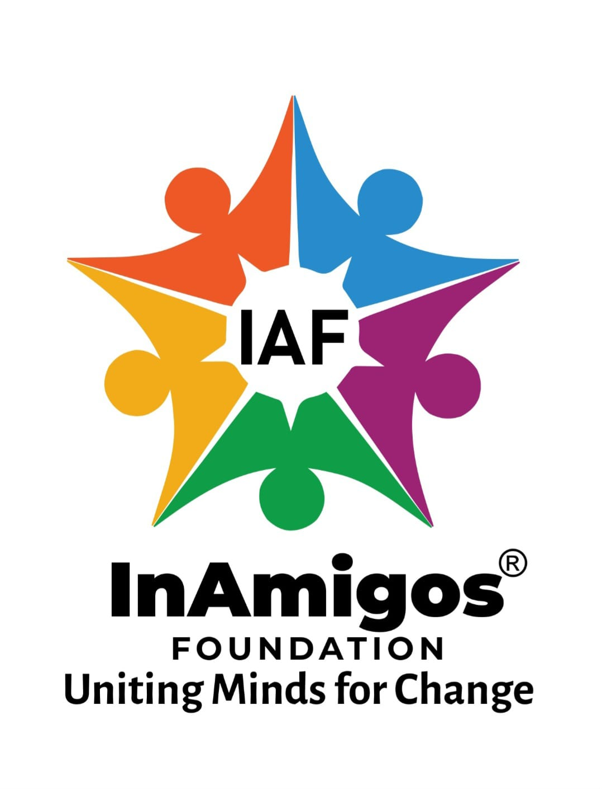
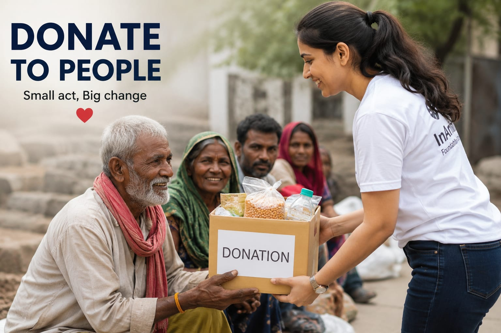
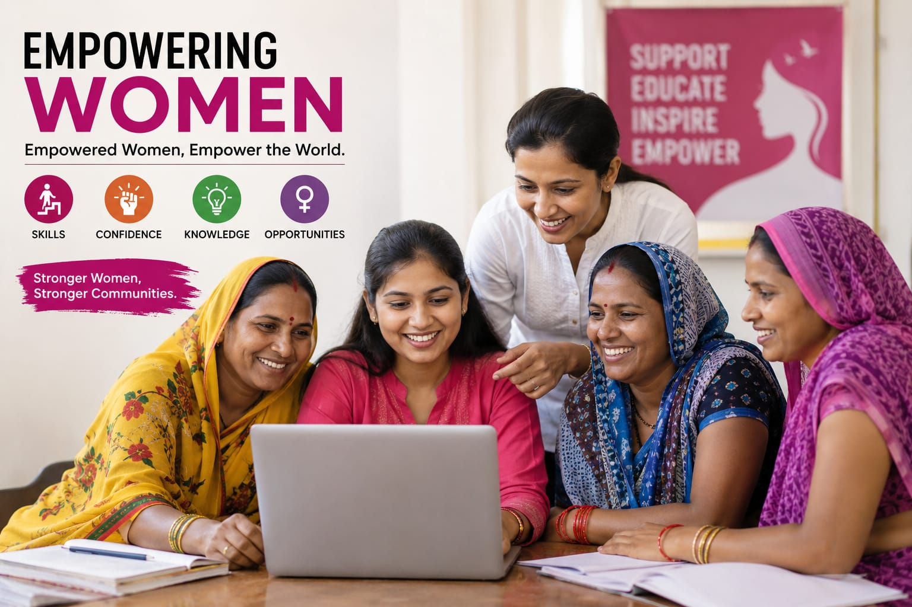
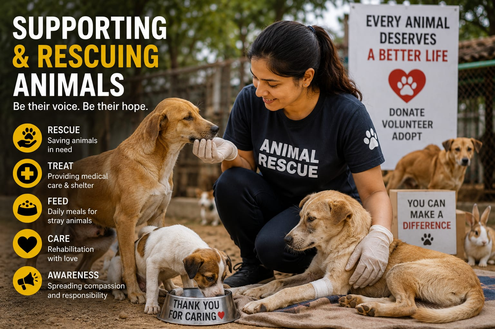
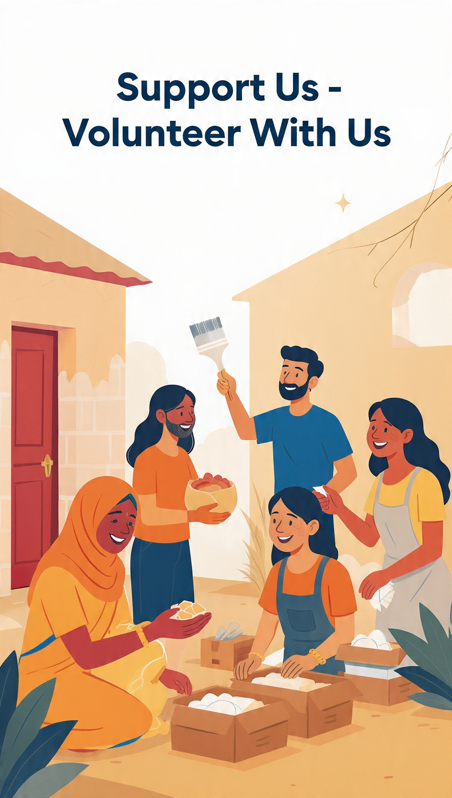
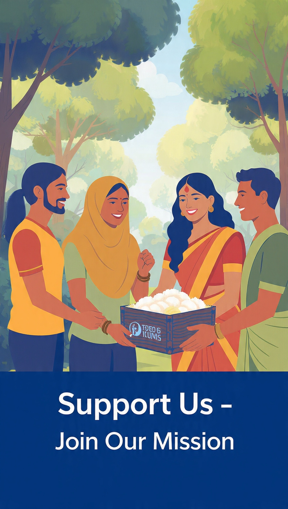
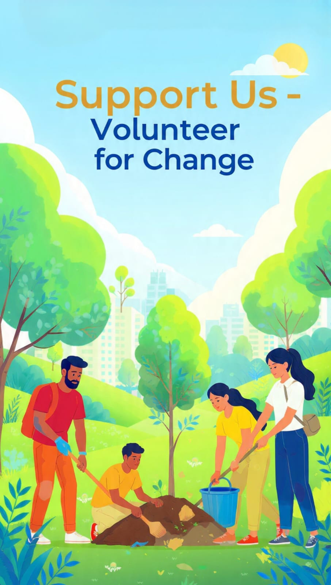

Founded in 2020 by Mr. Govind Shukla, InAmigos Foundation is a Chhattisgarh-based Section 8 NGO working across India.
We focus on education, healthcare, women empowerment, animal welfare, environment, and community development
Our motto: "Every small act of kindness can create a big change".
Seva:Food,clothes & essentials for people in need
Bachpanshala: Education + care for underprivileged kids
Jeev:Animal rescue & support care and welfare
Udaan:Skills & opportunities for women empowerment
Prakriti:Environment clean-up drives & plantation
Vikas: Internships & skill-building for youth



DISTRIBUTING MEALS AND CLOTHING ACROSS REGIONS
FEEDING STRAY ANIMALS THROUGH YTHE FOUNDATION VOLUNTEER NETWORK
EMPOWERING WOMEN THROUGH TRAINING AND DEVELOPMENT PROGRAMS
SAPLINGS ARE PLANTED TO SUPPORT ENVIROINMENT STABILITY
INTERNS AND YOUTH RECEIVE TRAINING AND PRACTICAL EXPOSURE



More than 50,000 meals and clothing items distributed to beneficiaries across various
More than 50 stray animals fed daily through the foundation's volunteer network
More than 900 women empowered through training and development
Over 20,000 saplings planted to support environmental sustainability
More than 30,000 interns and youth received training and practical exposure